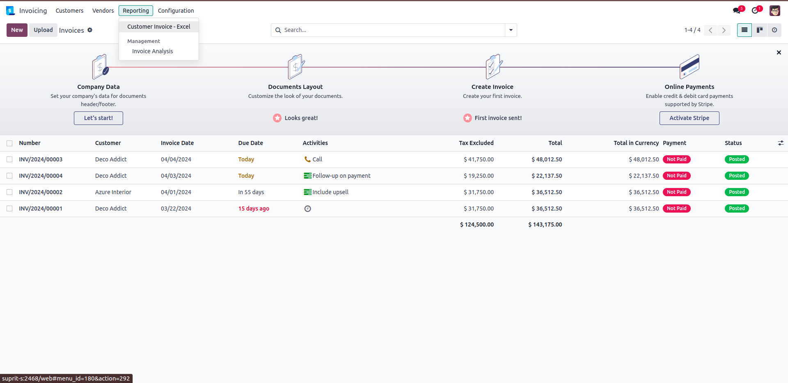
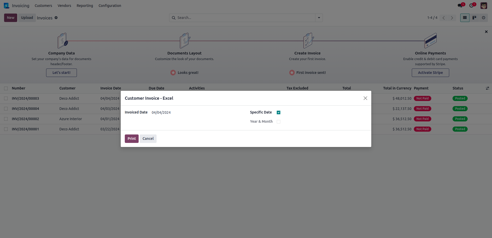
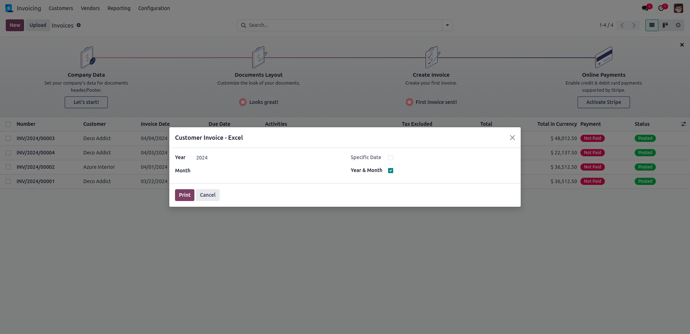
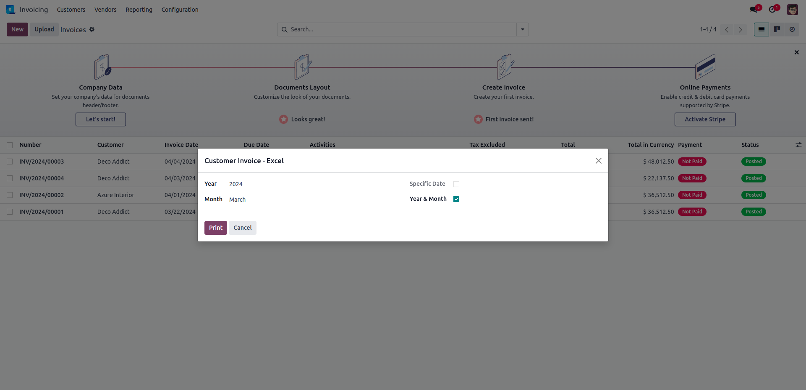
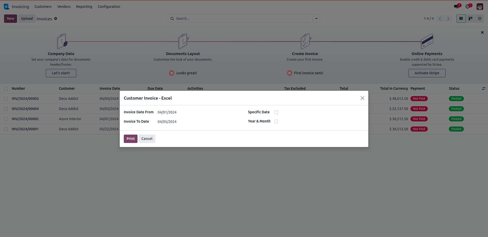

MENU

Choosing specific date and printing report

Printing report by choosing year and month
Choosing only year and printing report

Choosing year and month and then printing report

Choosing from and to range of dates and printing report
